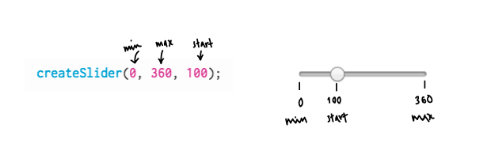
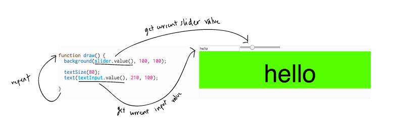

Overview
In this learning activity we will learn to use two other interactive HTML elements: sliders and text inputs.
Overview
In this learning activity we will learn to use two other interactive HTML elements: sliders and text inputs.
Introduction
Instructions
Sliders allow users to pick a value within a certain range by dragging a knob along a line. We can use the value of the slider to control something in our page or in our canvas.
For example, this slider changes the size of this word, which is an HTML element:
And this slider changes the background of the p5 canvas below it:
Let's create the sketch above, starting from a sketch that sets the background to a certain hue (0, or red) in the HSB color space:
function setup() {
createCanvas(600, 120);
colorMode(HSB);
}
function draw() {
background(0, 100, 100);
textSize(80);
text("hello", 210, 100);
}We need to do two things:
a. Create a slider element
The p5 function for creating a slider and inserting into the DOM is createSlider. It takes three arguments:

Because we will need to access the value of the slider from within the draw() function, we need to save a reference to it. Let's store it in a variable named slider, and declare that on top of our sketch:
var slider;
function setup() {
slider = createSlider(0, 360, 100);
createCanvas(600, 120);
colorMode(HSB);
}
b. Set hue to slider value
Right now we are setting the hue of the background to be 0 every time the draw() function runs (0 is red in the HSB color wheel). Instead, we need to set it to be the value that the slider is at ––if the user moved the slider to 100, the hue should be 100; if the user moved it to 260, the hue should be 260. Slider elements have a function called value() that tells us where it's at, so we can replace 0 with a call to this function:
function draw(){
background(slider.value(), 100, 100);
textSize(80);
text("hello", 210, 100);
}
Note: value(), like position() and html(), is a function that all HTML elements have.
Exercise: add two more sliders, make them control saturation and brightness.
A text input field is a box where a user can type text, like their name.
For example, this input field changes the content of this word:
This input field changes the text drawn on of a p5 canvas:
The p5 function that creates an input field element and inserts it to the DOM structure is createInput
The steps to add an input field are very similar to the steps for adding a slider:
var slider;
var textInput;
function setup() {
slider = createSlider(0, 360, 100);
textInput = createInput("hello");
createCanvas(600, 120);
colorMode(HSB);
}
function draw(){
background(slider.value(), 100, 100);
textSize(80);
text(textInput.value(), 210, 100);
}
Exercise: Add an h1 element to your sketch using the createElement function. Use the h1's html function to set the header's text to the content of the input field.
In the previous learning activity we created a button and attached a function to its mousePressed event, so that the function's code is executed each time you click on the button:

In this learning activity we did something different. We created a slider and a text input field, but we did not attach a function to an event ––we didn't say 'each time the user slides the slider, execute function A', or 'each time the user types in the input, execute function B'. Rather, we relied on the fact that the draw() function is a loop:
The value() function gives us access to the latest position of the slider, and to the latest text in the input. It is because draw() runs over and over again, re-drawing background and text each time, that we always see the latest color and the latest text on our canvas.
It is possible, however, to attach functions to slider and text input events, just like we attached the "changeColor" function to our button's mousePressed event: we can change the text only when the user hits enter, for example, and change the background color only when the user is done moving the slider. In the next learning activity we will learn about these and other HTML element events we can respond to.